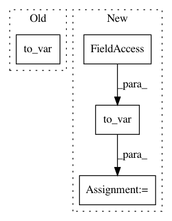

53531a5b2d07790c18ed18a54604d977cbdb1189,inferno/net.py,NeuralNet,evaluation_step,#NeuralNet#Any#Any#,486
Before Change
self.module_.train(training_behavior)
return self.infer(to_var(xi))
def fit_loop(self, X, y=None, epochs=None):
The proper fit loop.
After Change
self.module_.train(training_behavior)
xi = to_var(xi, use_cuda=self.use_cuda)
return self.infer(xi)
def fit_loop(self, X, y=None, epochs=None):
The proper fit loop.
In pattern: SUPERPATTERN
Frequency: 3
Non-data size: 4
Instances
Project Name: dnouri/skorch
Commit Name: 53531a5b2d07790c18ed18a54604d977cbdb1189
Time: 2017-08-07
Author: marian.tietz@ottogroup.com
File Name: inferno/net.py
Class Name: NeuralNet
Method Name: evaluation_step
Project Name: dnouri/skorch
Commit Name: 53531a5b2d07790c18ed18a54604d977cbdb1189
Time: 2017-08-07
Author: marian.tietz@ottogroup.com
File Name: inferno/net.py
Class Name: NeuralNet
Method Name: train_step
Project Name: dnouri/skorch
Commit Name: 53531a5b2d07790c18ed18a54604d977cbdb1189
Time: 2017-08-07
Author: marian.tietz@ottogroup.com
File Name: inferno/net.py
Class Name: NeuralNet
Method Name: validation_step